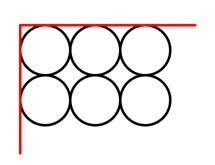

Aufgabe 83 100 Holzstämme sind, wie dargestellt, in 10 Reihen zu je 10 Stämmen gestapelt. Die Stämme sind 10 cm im Durchmesser und 1 m lang. Wie viel Holz und Luft enthält der Stapel? Wie schwer ist der Stapel, wenn er aus Buche mit einer Dichte von 0,7 g/cm3 besteht?

Der Stapel ist = 10 * 10 cm = 100 cm = 1 m lang und 10 * 10 cm = 100 cm = 1 m hoch Volumen des Stapels (rot) einschließlich der Luft = 1 m * 1 m * 1 m = 1 m3 VHolz = 100 * r2 * п * h r = d/2 = 10 cm/2 = 5 cm VHolz = 100 * 52 cm2 * п * 100 cm = = 785 000 cm3 = 0,785 m3 VLuft = 1 m3 - VHolz = 1 m3 - 0,0785 m3 = 0,215 m3 Holzmasse m: m = VHolz * ρ = 785 000 cm3 * 0,7 g/cm3 = = 549 500 g = 549,5 kg